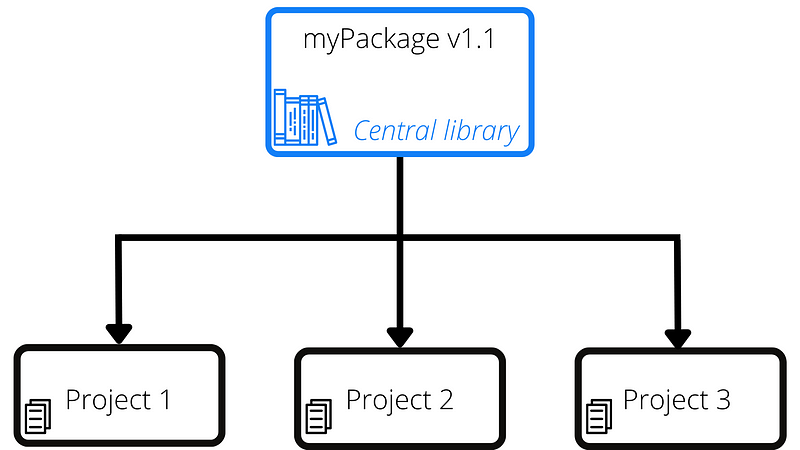
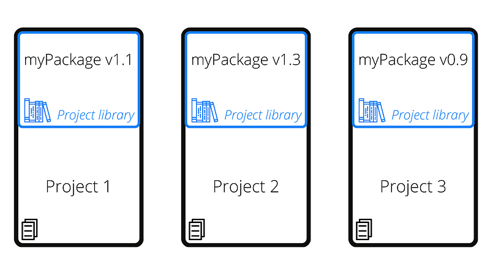

R, as virtually every other programming language, uses dependencies. Even if you do not use anything but base R, you still have dependencies: the specific version of R you are using.
There are dependencies you can control, and others you cannot. You can control which version of R you want to use, which packages to use and their versions. You cannot really control dependencies like specific operative system libraries you might need, like the version of the C++ compiler. Changes to either of those two classes of dependencies can break your code. Today I’ll show you how you can address changes to dependencies you can control, and I’ll briefly mention a couple of solutions for changes to dependencies you cannot control.
The problem
Let’s start by considering two scenarios:
- In the first scenario, you have your code working. The code is fully tested and it has been running without any issue for months. Now, all of sudden, you start to see a failure, but you have not changed your code in a long time. What could it be? This can be extremely hard to debug. You check if the inputs have changed, but they haven’t, they are still what you would expect. After hours spent investigating your code, you realize that one of the packages you depend on has changed in the main library path, and the new version is breaking your code.
- Now, for our second scenario, suppose that you share your perfectly working code with some of your colleagues. They try your code, but it does not work. Why? They do exactly all the right steps, the inputs are the same, why does the code not work for them? Once again, after a few hours of investigation, you realize that they use a different version of a library than the one you used. How can we fix both problems? To fix the problem, we must first understand why the root cause is. In both scenarios, the issue is with a non-reproducible environment. Specifically, in the first case we are not protecting our code against external changes to our dependencies, in the second scenario we did not communicate what our code needs to run.
R standard set up
In R, unless you made changes, all the dependencies you need are installed in a central location. All the projects you work on will use the library you have installed in that location.
This means all your projects will use the exact same version of a specific package: the one installed in the central location. If you need to upgrade a package for one project, but the same upgrade breaks another project, there is not much you can do about it. This can happen more frequently than you think in organizations using RStudio Server. Those organizations normally have IT managing the main repository for R, and at some point they might decide to upgrade some or all of the packages, or even the version of R. If you did not protect your code, get ready to spend a few hours or days debugging and updating your code.

Enter renv
renv (reproducible environment, https://rstudio.github.io/renv/) is an R package that does two main things:
- It creates a local version of your library that is used only by your current project.
- It creates a list of all the dependencies you use, their version, and their origin.

For those of your a bit more experienced in R, you might remember the packrat package. renv is its evolution, a more reliable and stable way to handle dependencies, and as of today you should not be using packrat anymore, you should be using renv. In fact, renv provides e simple, handy function to help you migrate from packrat to renv: renv::migrate().
How to use renv
Using renv is very simple. You only need to remember three commands, four with the installation: install.packages(“renv”):
renv::activate()renv::snapshot()renv::restore()
renv::activate()
This command initialize the renv machinery. You do not even need to run the command from the R console: you can also either click “Use renv with this project” when you create a new project, or open the project settings, go the environment tab, and click on “Use renv with this project”.
renv::activate() will create the following files and folders:
├.Rprofile
├renv
| ├.gitignore
| ├activate.R
| ├library
| | └[...]
| ├local
| | └[...]
| ├staging
| | └[...]
| └settings.dcf
└renv.lockNote that the files renv.lock and settings.dcf might or might not be present depending on how you activated renv.
Let’s explore all these new artifacts:
.Rprofile. This is a file run by RStudio every time you start an R session. It will simply tell RStudio to activate the renv machinery by executing the content ofrenv/activate.R..gitignore. This file contains what should not be loaded into the remote repository. Mainly, it ignores the folders library and local, which is where all your dependencies will be installed. This makes sense, since those folders will be fairly large, and they can simply be recreated automatically byrenvusing the information inrenv.lock.activate.R. This R scripts initializes therenvmachinery. You do not need to worry about it, just leave it where it is and don’t change it, unless you really know what you are doing.library,local, andstagingare the directories where all your R dependencies will be installed. You can even have multiple libraries for multiple versions of R.settings.dcf: These arerenvsettings. In this file you can specify things like what type of snapshot you want to record, etc. Normally you do not need to change the defaults, but if you do, here is a link to the documentation.renv.lock. This file contains all the information you need to recreate your environment. It is in JSON format. Let’s have a look at a snippet:
{
"R": {
"Version": "4.1.0",
"Repositories": [
{
"Name": "CRAN",
"URL": "https://cran.rstudio.com"
}
]
},
"Packages": {
"renv": {
"Package": "renv",
"Version": "0.14.0",
"Source": "Repository",
"Repository": "CRAN",
"Hash": "30e5eba91b67f7f4d75d31de14bbfbdc"
}
}
}As you can see, this project uses R 4.1.0, and it has one repository only: the cran.rstudio repository. There is also only one dependency recorded at this stage: renv. Critically, we also know that it is the version 0.14.0 and it was installed from the repository declared above.
renv::snapshot()
As you add more dependencies to our project, you need to make sure that they are captured in the renv.lock file. This can be done using the command renv::snapshot().
One important thing to remember here, renv::snapshot() will check all your project files for dependencies, and it will then add them to the renv.lock. This means that a dependency will be added to renv.lock only if it was explicitly declare. In other words, there must be a line stating library() or require(). If you install a package but you don’t use it, the package will still be saved in the renv/library folder; it will not be recorded in the renv.lock until it is explicitly declared as a dependency.
Another way to make dependencies discoverable by renv, beside the library()/require() explicit method, is to add a DESCRIPTION file to the root of your project, as you would with an R package, and to use the Imports/Depends fields (see here).
renv::restore()
The final piece of the renv mechanism is the renv::restore(). This is the command you want to use when you re-start your project from scratch, for instance when you re-clone the repository to a different machine. renv::restore() will go through the renv.lock file and it will attempt to re-install all the declared dependencies.
Limitations
renv can go a long way in ensuring a reproducible environment. However, there are limitations to what it can do. I mentioned at the beginning of this article that there are dependencies you cannot control. Those are dependencies outside the R project and renv cannot capture them. For instance, what operating system you are using, the version of the operating system, or what system libraries and dependencies are installed. Managing all these variables is extremely important, but it is beyond the scope of this article. The industry standards to address these problems are to either dockerize your tool, or to use virtual machines.
Conclusions
In this article we saw how important it is to protect your code against changes to its dependencies and to specify exactly what your code needs to run when you share your work, or even when you re-install it into a different machine. The tool of choice to do so in R is renv. renv is very simple to use and under normal operation it only requires three commands: activate, snapshot, and restore.